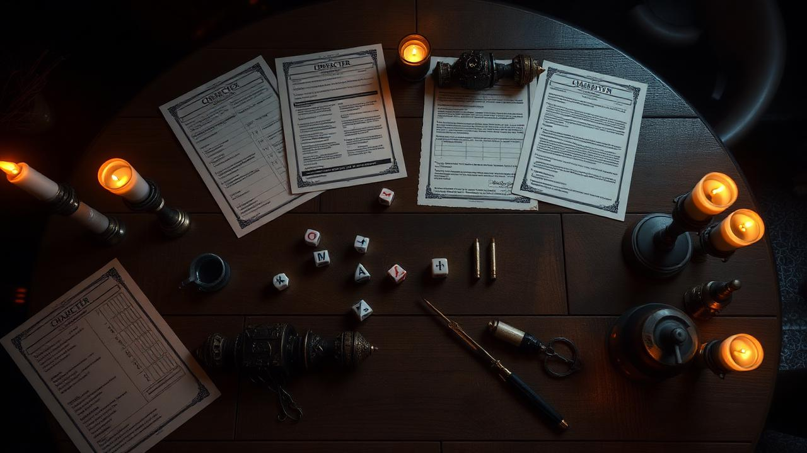

Crie fichas de
agente em minutos
Ferramenta visual e intuitiva para gerar fichas completas — origem, classe, atributos, perícias, poderes e inventário — sem precisar decorar tabelas.
O que é RPG?
Conheça o universo dos jogos de interpretação de papéis antes de criar seu primeiro agente.
Role-Playing Game
RPG (Role-Playing Game) é um jogo onde os participantes assumem o papel de personagens fictícios em uma narrativa colaborativa. Um mestre conduz a história, enquanto os jogadores tomam decisões, resolvem enigmas e enfrentam desafios usando atributos, perícias e dados.
Diferente de videogames, o RPG de mesa não tem limites pré-programados — sua imaginação é o motor. As regras existem para dar estrutura e consequência às ações, mas a história é construída por todos na mesa.
Os dados (d4, d6, d8, d10, d12, d20) determinam o sucesso ou falha das ações, adicionando imprevisibilidade e emoção a cada momento.

Ordem Paranormal
O RPG brasileiro que conquistou milhões de fãs, criado por Cellbit e publicado pela Jambô Editora.
Investigação paranormal no Brasil
Em Ordem Paranormal, você interpreta um agente da Ordo Realitas, uma organização secreta que investiga e combate ameaças do Outro Lado — uma dimensão paralela repleta de criaturas e fenômenos sobrenaturais.
O sistema possui quatro classes (Combatente, Especialista, Ocultista e Sobrevivente), cinco atributos (Agilidade, Força, Intelecto, Presença e Vigor), e um sistema único de Sanidade que reflete o impacto psicológico do contato com o paranormal.
O universo inclui rituais, itens amaldiçoados, elementos paranormais (Sangue, Morte, Energia, Conhecimento e Medo) e uma progressão por NEX (Nível de Exposição Paranormal).
Por que uma ficha é importante?
A ficha de personagem é o documento central de todo RPG. Ela registra tudo sobre seu agente: origem, classe, atributos, perícias treinadas, poderes, inventário, rituais e itens amaldiçoados.
Criar uma ficha manualmente exige consultar tabelas, calcular bônus e anotar regras. Esta ferramenta automatiza todo esse processo, permitindo que você foque no que importa: a narrativa e a diversão.
Ideal para jogadores iniciantes que querem entrar no universo sem barreiras, e para veteranos que querem testar builds rapidamente.
Sobre o Projeto
Um Trabalho de Conclusão de Curso focado em acessibilidade e comunidade.
🎓 Projeto de TCC
Desenvolvido como Trabalho de Conclusão de Curso por Luiz Felipe e Pedro Cortez. O objetivo é criar uma ferramenta open-source que facilite a criação de fichas de RPG para a comunidade brasileira.
🌐 Open Source
Todo o código é aberto e disponível no GitHub. Qualquer pessoa pode contribuir, sugerir melhorias ou adaptar para outros sistemas de RPG. Acreditamos que a comunidade é o motor do projeto.
📱 Acessível
Funciona em qualquer dispositivo com navegador — computador, tablet ou celular. Não precisa instalar nada, criar conta ou pagar. É gratuito e sempre será.
🚀 Em Evolução
O projeto está em constante desenvolvimento. Planejamos suporte para outros sistemas como D&D 5e, Call of Cthulhu, e exportação de fichas em PDF e JSON.
Por que usar esta ferramenta
Projetada para tornar a criação de fichas acessível, precisa e rápida.
Entrada suave
Não precisa decorar fórmulas. Vida, esforço, sanidade e determinação são calculados automaticamente em tempo real.
Regras oficiais
100% fiel ao sistema da Jambô Editora, incluindo limitações de classe, bônus passivos e progressão por NEX.
Mesas reais
Ideal para mestres criando NPCs rapidamente e jogadores testando conceitos antes da sessão.
Rituais e Poderes
Sistema completo de rituais com filtros por círculo e elemento, formas Discente e Verdadeiro, e poderes de origem integrados.
Inventário inteligente
Controle de carga, categorias por patente, itens do livro e personalizados, com suporte a itens amaldiçoados.
Tema claro e escuro
Alterne entre tema dark e light com um clique. Sua preferência é salva automaticamente para as próximas visitas.
Como funciona
Quatro etapas simples para ter sua ficha pronta.
Escolha a Origem
Mais de 40 origens oficiais com perícias, equipamento e poder único.
Defina Classe e Atributos
Combatente, Especialista, Ocultista ou Sobrevivente. Distribua pontos com limites claros.
Veja Status & Perícias
Cálculo automático de PV, PE, Sanidade e PD. Perícias treinadas marcadas.
Equipe seu Agente
Adicione inventário, rituais, itens amaldiçoados e ative poderes para completar sua ficha.
Perguntas frequentes
Tudo que você precisa saber antes de começar.
Posso usar sem ter o livro básico?
Sim. A ferramenta explica tudo o necessário para criar a ficha. Para mestrar ou jogar, o livro oficial é recomendado.
Funciona no celular?
Sim, o layout é totalmente responsivo. Botões e selects funcionam bem em touch.
O que é NEX?
NEX (Nível de Exposição Paranormal) representa o quão exposto ao Outro Lado seu agente é. Vai de 0% a 99%, influenciando atributos, poderes e habilidades disponíveis. É o equivalente ao "nível" em outros RPGs.
Quais são os elementos paranormais?
São cinco: Sangue (vitalidade e corpo), Morte (entropia e decadência), Energia (forças naturais), Conhecimento (mente e psique) e Medo (terror e ilusões). Cada um afeta rituais, itens amaldiçoados e criaturas.
Posso salvar ou exportar a ficha?
Atualmente é possível salvar localmente. Exportação como PDF/JSON está planejada para próximas versões.
É gratuito?
100% gratuito e open-source. Projeto de TCC para ajudar a comunidade brasileira de RPG.
Pronto para criar seu agente?
Entre no Laboratório de Fichas e monte sua ficha em poucos minutos.
Iniciar criação →